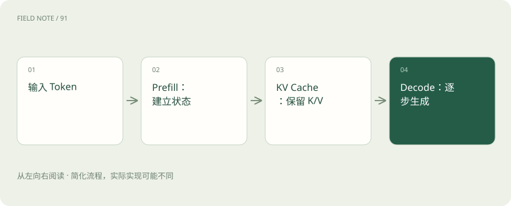

先读哪些知识
先用一个类比理解
像先读完题目做笔记，再逐句写答案。笔记帮助避免每写一句都从头重复部分计算，但笔记会占空间，也不能代替原理上的完整计算。
类比只帮助建立直觉，不等同于技术的完整机制。
一图看懂

Prefill 主要处理输入
在常见自回归 Transformer 服务中，输入 Token 经过模型计算并形成 KV 状态。输入长短、是否命中前缀缓存、硬件和批次安排都会影响这部分时间。
Decode 逐步产生输出
生成一个 Token 后，把它加入后续生成的条件。缓存此前 Token 的 Key 和 Value，可避免在后续步骤中重复计算它们；仍要进行新 Token 的相关计算与注意力操作。
缓存有不同层次
会话内 KV Cache、跨请求前缀缓存、完整回答缓存是不同东西。前缀缓存依赖相同且可兼容的前缀状态；它不保证语义相近的任意问题都能复用，也不直接缩短输出 Token 数。
放进真实场景
SCENARIO
许多用户使用同一段长系统提示词时，前缀缓存可能节省重复输入计算；如果每次开头都不同，命中机会可能减少。
别踩这个误区
KV Cache 不是知识库，也不是一份永久聊天记录。缓存复用还要考虑租户隔离与数据安全。
想一想
复用了输入前缀，后续几百字回答是否就不必生成？
仍需生成。前缀缓存主要减少可复用输入部分的计算。
关联阅读
资料与边界
本文为原创知识讲解。类比和图示经过简化；示例数字不代表实测或报价。整理日期：2026-11-04。文末列出对应技术的原始资料，具体功能与版本支持请以原文为准。
按完整目录逐篇阅读